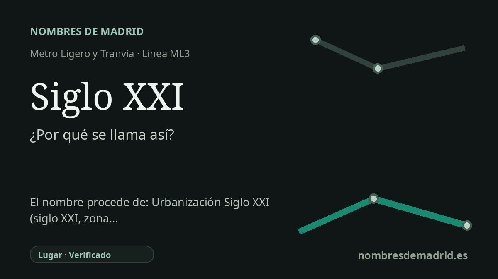

Publicado el · Investigación de Nombres de Madrid · Cómo verificamos cada origen · 6 fuentes consultadas
Respuesta rápida
Siglo XXI toma su nombre de la Avenida del Siglo XXI, junto a la estación en Boadilla del Monte. El nombre identifica también un sector residencial reciente al que llegó la línea ML3 de metro ligero desde su apertura en 2007.
La historia del nombre
El nombre de la estación procede de su entorno inmediato: la Avenida del Siglo XXI, en Boadilla del Monte. Metro Ligero Oeste identifica Siglo XXI como una estación de la ML3 situada en la avenida homónima, y el Consorcio Regional de Transportes localiza el acceso de la estación en la Avenida del Siglo XXI, 1.
Detrás del nombre no hay una persona ni un topónimo rural antiguo, sino una denominación urbana moderna. 'Siglo XXI' nombra literalmente al siglo veintiuno y, en Boadilla, designa tanto una avenida principal como el sector Siglo XXI, una zona residencial reciente al oeste del casco histórico.
La cronología es importante. La descripción regional del proyecto de metro ligero Colonia Jardín-Boadilla indica que el trazado terminaba en los nuevos desarrollos de la Avenida Siglo XXI, más allá de la M-50, junto al intercambiador de transportes de Boadilla. Metro Ligero Oeste fija el 27 de julio de 2007 como fecha de inauguración de su sistema, y la línea ML3 conectó Colonia Jardín con Puerta de Boadilla pasando por Siglo XXI.
El nombre también da una pista sobre la geografía urbana reciente de Boadilla. Algunas paradas próximas remiten al centro urbano, al ferial o a vías cercanas; Siglo XXI pertenece al eje de expansión posterior en el que se articularon metro ligero, viviendas, servicios locales y nuevas calles.
La evidencia es sólida para el origen directo del nombre: la Avenida del Siglo XXI y el sector Siglo XXI. Lo que queda menos claro es la intención concreta con la que se bautizó la avenida o el sector. Es razonable interpretarlo como un nombre moderno y orientado al futuro, pero no consta una resolución municipal de denominación ni un documento urbanístico que explique explícitamente ese simbolismo.